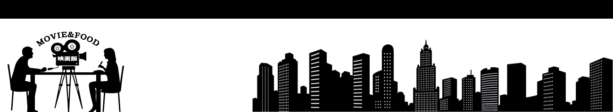
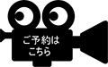

about
menu
schedule
reserve
access
About
”あのひと”と”わたし”だけの空間。
映画飯は、都会の喧噪を忘れて映画と料理を
大好きなあの人と優雅に楽しむオトナのための隠れ家です。
お席は３時間制で、映画はお昼・午後・夕食の１日３回上映しております。
料理は全てコースとなっており、
メニューを迷わずに映画へ集中することができます。
ジャンルは1960年代から最新映画までの”恋愛映画”がテーマ。
色あせることのない時の不思議をぜひ、あのひととの思い出に。
